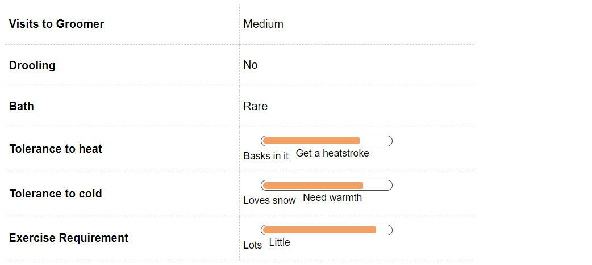
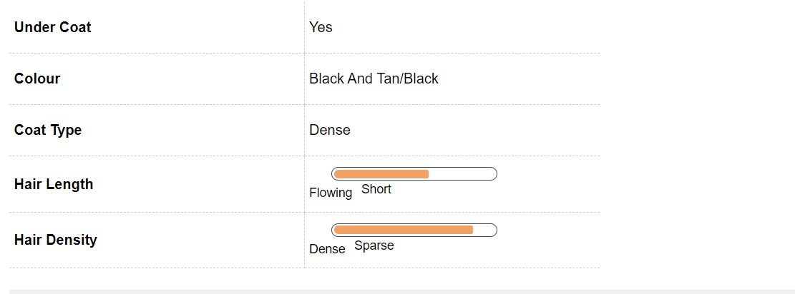
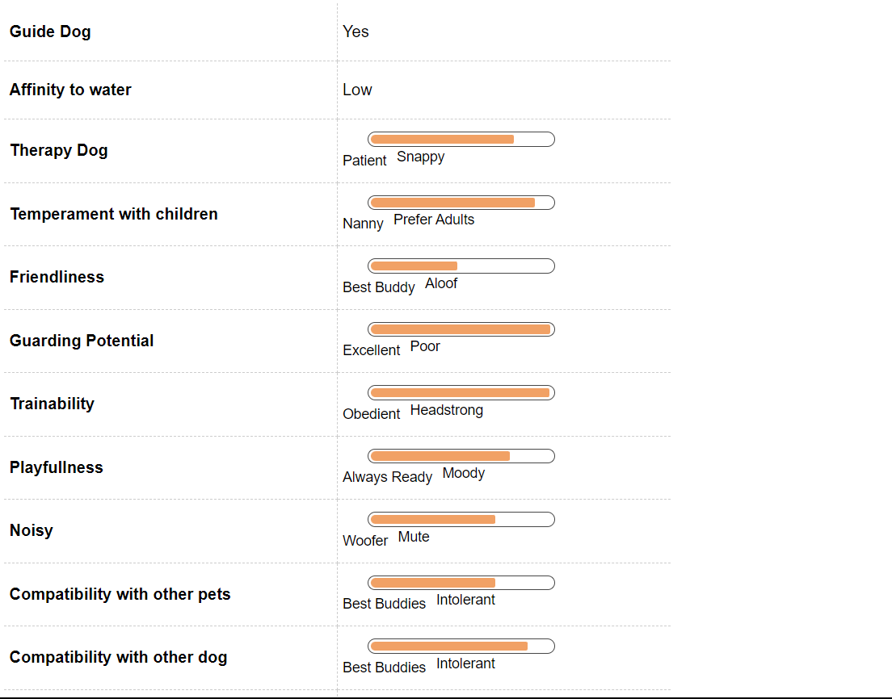
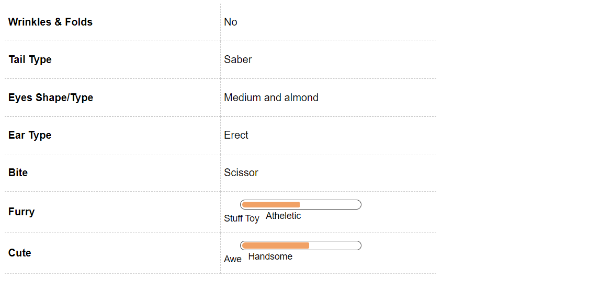

German Shepherd Dog Breed Information
Introduction
The German Shepherd, as some call it, is one of the most handsome dogs around. Their agility and good looks made them the first canine stars. This may come as a surprise to some but in the 1920s Warner Bros was on the verge of bankruptcy.
A film featuring a German Shepherd called Rin Tin Tin saved them. The film name is Where the North Begins. This movie was such a hit the breed becam very popular. Rin Tin Tin received more than 10,000 fan mails in a week.
German Shepherd aka Hektor Linksrhein came into existence in the year 1899 in Germany after a man’s search for an intelligent, loyal and working dog came to a fruitful end. The first name that this beautiful German Shepherd was christened with was Horand and he was the first entry in the society for German Shepherd started by Von Stephanitz.
The funny thing is that for decades German Shepherd was referred to as an Alsatian Wolf dog especially in the U.S because of anti-German sentiments which dominated the world after the world wars. The name was changed back to German Shepherd after a series of protests led by groups across the world.
This breed falls under the medium to large category and weighs around 35 to 40 KG. It’s lifespan is about 11-12 years and this beauty looks great in its double coat which is mostly tan/black and red/black in color. It isn't too furry which saves a lot of vacuuming trouble.
This breed was bred originally as dogs which would work hence the Shepherd in their names. Living true to their name they can still be seen toiling, most recently with the Delhi Metro Personnel. This breed of dogs are fiercely loyal and stay true to their nature by guarding their owner’s property with their life.
German Shepherds are also famous for their intelligence and they pick up things rather quickly. You know the phrase curiosity killed the cat, most probably it was a German Shepherd which had a hand in it (due to its curious nature). These curious dogs may look threatening but they are protective and a great friend to have.
German Shepherds also have a keen nose and hence are used in lot of places as sniffer dogs. German Shepherds are also friends with the cops as they help them in a lot of dirty police work. This breed is adaptable, it doesn’t mind the cold or the heat as long it is trained properly and put to work.
A German Shepherd is also a great exercise companion, it loves working out and going for runs. German Shepherds can give cold vibes to strangers but once assured that the stranger means no harm to its owner, it quickly become friends with the stranger.
The best word to describe a German Shepherd is Protector. Its majestic stature, smooth coat and vigilant eyes coupled with its strong nose and loyalty proves him to be one of the best companions to have.
It will show its love by protecting you and being loyal to you. GSDs are one of the most intelligent dogs and it is a common sight to see them being used a lot in the armed and police forces. There are more than 8000 Shepherds employed in the US police force.
History
Their intelligence and training ability made them an integral part of both World Wars. The story of the origin of German shepherd dates as back as early 1850’s, where people across Europe were looking for ways to make sure that dog breeds are standardized.
The purpose of the new age dogs was twofold – to help guarding the sheep’s that people around that time had along with slight assistance on other tasks of sheep herding. On a community level this was taking place in Germany where in local villages cross breeding between different kinds of sheep dogs was taking place.
There were certain traits that were kept in mind while breeding these kinds of dogs, the traits were that of Intelligence, for quick action; loyalty to make sure that the guard didn’t sway easy; speed to ensure that the dogs were always on their toes and a certain amount of basic strength.
There were many cross breeds that came up in various villages around Germany, all of them differing in slight ways from each other but more similar because they were supposed to fill the same purpose of being a guard dogs. To overcome these differences of breeds, there was a society by the name of Phylax which was formed.
This society was one of a kind as it proved to be the pioneer for the revolution which asked for standardization of dog breeds. The Phylax society had certain ongoing conflicts about the aim of dog breeding, the conflicting sides being – dogs need to be bred for solely work or certain emphasis needs to be paid to how it looks as well.
These conflicts led to its dissolution after three years. An ex member of the Phylax society at this time when there was a growing administration for an intelligent sheepdog started looking for that perfect breed. His name was Max von Stephanitz and he was strongly opinioned that dogs should be bred solely for working purposes and the biggest problem that he faced was that he couldn’t decide upon a dog which he believed would be suitable.
In 1899 Max von Stephanitz went to a dog show and came across the breed that was for him, love at first sight. His name was Hektor Linksrhein and we were a product of a number of cycles of cross breeding. For Stephanitz, he checked all boxes and hence he brought the dog who in modern day is known as a German shepherd.
After the first German shepherd dog was brought he was christened to the name Horand Var Grafrath, so the first dog of the German shepherd generation was called Horand. Stephanitz went on to form a society for German Shepherds and Horand was made to mate with a number of dogs which displayed likely traits that were wanted.
The most successful of the cross breeding was a dog called Hektor von Schwaben. Horand then mated with pups from Hektor and hence there were a substantial number of Pups produced through Horand. A lot of credit is though given to Stephanitz who through his tenuous efforts gave birth to the society and ensured that there is healthy breeding of the German shepherd dogs.
The qualities that inspired Stephanitz in this medium sized dog was how protective he was and his curiosity was inspiring along with his intelligence. Horand was a beautiful dog and loyal to the core, which led to the dog being such a hoot.
There were about 57 thousand German Shepherd’s by the year 1923 all due to the efforts of Stephanitz. Parallel to the time when this breed was getting developed there was also this crisis where the need of breeding dog was lessening.
There was a downfall in sheep raising which led to the downfall in needing guarding dogs which would take care of the sheep. Later because if the heightened sense of sense in the breed, he was promoted as a police dog. He was also promoted as a helper for the blind people. German Shepherd today is a dog of service which finds his use in many places.
Their strong, protective instincts made them a superstar with security and armed forces; and ever since then, there has been no looking back. Their loyalty and amazing intelligence have made them the perfect service dog. Impressed by their loyalty and bravery, this breed was taken to the USA in 1906.
There are a lot of people who believe that this breed was bred from the wolf but it is not true. The Dutch breeders tried interbreeding wolfs in the 1920s but the dog could not be domesticated.
Unique Aspects
The majestic breed is a softie at heart. These deputy sergeants are ready to take a bullet for their partners or family. They are one of the most loyal pets around and are highly protective of their family members.
GSDs are very athletic dogs and their intelligence makes them unique. You can train them to do anything and their ability to stop at command makes them one of the easiest breeds to train. Their wolf like muzzle helps to track offenders in the police force or sniff out drugs or any contraband products. Even as a pet you can train them to be the perfect guard dog.
You will be surprised to know that their fatal scissor grip is only second to the Rottweiler. So, if there's a trespasser this handsome breed will bite and exert a pressure of over 238 pounds per square inch, which if not fatal can leave the intruder gravely injured.
Fun Trivia

German Shepherds are one of the first canine movie stars in Hollywood. The breed gained fame with Rin Tin Tin. Their training ability has made them superstars ever since then. Here is a brief mention of some of the famous movie stars and celebrity pets you share your pet with.
Movie Character
After its debut in the silent movie, Rin Tin Tin has been a regular feature in various Hollywood movies. A few of them are Reservoir Dogs, I Am Legend, The Happening and Bruno just to name a few. There are numerous movies starring this handsome dog.
Celebrity German Shepherd owners
This intelligent breed has caught the fancy of many Hollywood and Bollywood celebrities alike. The list includes some former White House members such as Franklin D. Roosevelt and Jacqueline Kennedy. Also, they were favorites with Adolf Hitler. Currently, Ben Affleck, Roy Rogers and Rudolph Valentino have them at pets. Closer home, Tara Sharma owns this majestic breed.
Vital Stats:
Dog Breed Group:
Pastoral
Ear Type:
Erect
Guard Dog:
Yes
Life Span:
11 to 12 years
Pros and Cons
| Pros |
Cons |
|
When we talk dogs, one of the first words that strike us is Loyalty, German Shepherds are the brand ambassadors of a loyalty in the dog breed. They will guard your home better than any human guard can and they will also risk their life to protect yourselves.
|
There are also disadvantages of having a German shepherd as your pet. One of the biggest is that there is a lot of hair fall all year along. You will find dog hair practically everywhere. As a breed, they are prone to many health issues such as arthritis etc which can lead to huge vet bills and other things unless controlled.
|
|
They are also dogs who look great in a dog show, their thick fur and sturdy physique make them a great show dog. They also learn tricks quickly so they are good on stage and confident.
|
It isn’t great for German Shepherd to be restricted to a small space as they have a lot of energy and need physical activity. People who own German Shepherds should also be active as these dogs require exercise.
|
|
German Shepherd is the 3rd most intelligent breed of dog which makes them available for many tasks. They are also not lazy which makes them useful for purposes other than cuddling. They are also easy to maintain, they needn’t be bathed daily which makes it great. They are also not smelly so they can go without bathing for a long period of time.
|
German Shepherds though don’t have anger issues as such but if they aren’t trained properly, a German Shepherd can become wild and aggressive. German Shepherd’s aren’t the happiest when left alone, they require time and energy of their owner. Having a German shepherd isn’t a good idea when time and energy can’t be given to it.
|
German Shepherd Maintenance & Effort

Grooming
Your German Shepherd has a double layer coat i.e an undercoat and a topcoat. This breed sheds heavily for those who have them at home would know that hair can be seen everywhere. They are heavy shedders. The easiest way to avoid this is to brush them everyday this will restrict the hair flying all over your place.
German Shepherds have a thick coat, they come with a substantial amount of hair and that needs to be groomed properly to ensure that there isn’t too much hair fall. There are a couple of things that can be done such as brushing their coat daily, this would reduce the shredding of hair drastically.
These dogs don’t require a bath daily, they should be washed as need arises. They can be washed when they get dirty while playing. It is slightly difficult to wet the undercoat while bathing.
The nails of German Shepherd’s need to be cut occasionally though there needs to be caution while cutting the nails as they are black and can lead to cutting the vein which is present near the nail. Unless a person is experienced in nail cutting, they should be taken to the vet for nail cutting. Their ears need to be maintained as they have deep ears which require regular cleaning.
German Shepherds have a variety of coats but the most common characteristics to these coats are thickness and undercoated fur. German Shepherds have different types of coats, such as thick coats, medium coats and short coats which all come with an undercoat. All these have undercoats, it is difficult to wet the undercoat at the time of bathing.
Undercoats are thick and hard while the coats on top are softer. The thickest coat is on the neck and thinner coat is everywhere else.
German Shepherds come in a variety of colors such as black, tan, red, sable, gray, blue, white etc. The most common among these is black with a tan coat. There are other color combinations which are equally popular, they are black and cream, black and silver, red and black, black and red etc. Even pure black.
The best accessory for your pet will be a short tooth grooming rake that helps to remove the dead undercoat of your Shepherd while maintaining a smooth and lustrous topcoat at all times. If not brushed regularly then your pet can develop mats and clumps of dirty hair, which will not only make the coat look dull but can be a breeding ground for infections. In addition to this follow the regular grooming regime of checking the dog for presence of any ticks and fleas. This is integral for working dogs such as police forces.
Feeding and Nutrition
German Shepherds are large dogs who consume a lot of food, they also have enhanced energy levels which makes their appetite even more potent. German Shepherds are also prone to certain genetic diseases and it is necessary for them to be fed proper food and get enough exercise to prevent them from getting fat and to avoid them getting the genetic diseases.
While hunting for food which is suitable for a German shepherd, It is important to focus of food which is good for their coat and isn’t tough to digest. German Shepherds are prove to have stomach problems, so while feeding them it Is necessary to see that the food is not too hard on the stomach.
There is a certain amount of calories that these large dogs need, a young active German shepherd would need anything between 1700 to 2000 calories per day. Little older dogs would need anything between 1300-1500 calories per day.
German Shepherds have to be given puppy specific diet for the first 6 months of their life as compared to other dogs which are fed puppy specific food for up to a year. It is very important to feed a German Shepherd a diet that is full of power as these dogs are active and energetic, lack of a proper diet can make them weak and their energy levels can drop to an all-time low.
Ensure that the diet is rich in proteins and fat. Fat helps in keeping the coat of the dog healthy. It also helps with the hair fall. Young Puppies need to be fed smaller portions often and puppies cannot limit how much they eat so to prevent vomiting and over eating, their portions need to be regulated.
There should be minimum 18 percent fat and 30 percent protein in each of the meals served to the German Shepherd. There are certain packaged foods that are available specifically for this breed. Dry food is more economical than wet or semi wet food. In case of a pregnant female the fat content should be minimum 8% and 5% in case of an adult. Protein level should be 22%.
German Shepherd is one breed which is most prone to food allergies and suffers greatly because of it, so there needs to be caution when choosing food for this breed.
There aren’t common foods that all German Shepherd’s would be allergic to but it through observation one can find out what suits your dog and what does not. This breed also has sensitive digestion, this should be kept in mind while preparing meals for the breed.
German Shepherd Hair & Coat

German Shepherd Health & Care
Common Health Issues
German Shepherds in general are very healthy breeds but with age this majestic breed can wear down. One of the most common diseases are hip dysplasia, a common problem with all large breed working dogs. This is an abnormal growth in the hip bone and can be treated with surgery.
German Shepherd is very loyal and hardworking as it looks, it can easily qualify as one of the most useful dogs but that doesn’t take away the fact that it also suffers a lot because of its ailments. There are certain ailments that are genetic to this breed and correct information and timely diagnosis can save a lot of trouble for the poor German Shepherd and its loving owners. A few of the problems that they are prone to are – Megaesophagus basically the food can’t be passed in a usual way because the food pipe loses its grip. Common symptoms of this condition are vomiting and malnourishment.
This happens when they are exposed to a lot of solid food with little water content. Generally, this condition can’t be treated, and these dogs must be on a liquid diet for a long-long time. There is a condition called Hip Dysplasia which means that there is a problem in the hip joint and the knee socket which leads to instability in the leg. It is a painful condition. This is also a genetic disorder so there isn’t much that can be done for prevention or cure of the disease. When you feel that your German Shepherd is slowing down, it is often because of a condition called Osteoarthritis. The breed generally starts limping and there is evidence of them being in pain, a lot of times it is a result of Hip Dysplasia but a lot of times it is genetic. There isn’t any specific cure for it but a bunch of medications can surely reduce pain and make the quality of life better.
Another disease that one needs to be aware of Degenerative Myleopathy, it is a neurological disorder which affects dogs which are middle aged or older. It leads to rear limb weakness and then ultimately paralysis. There is something called Perianal Fitsula too where the skin opening around the anus generally opens up and leads to reoccurring diarrhea, stool with blood and problem in defecting. It starts with a smelly bed. There are treatments available for this disorder though.
If you are planning to buy a puppy then ensure that you get a good breeder as indiscriminate breeding can give rise to various hereditary issues in your puppy. The most common issues are blood disorders, epilepsy or seizures and chronic eczema. These problems are mostly not there if you get a good lineage puppy. These diseases if diagnosed in time can be easily be treated by a good vet.
These diseases suck and they are more difficult to cure than to prevent. The age old saying that prevention is better than cure works well on this lovely breed as well. There are a few things that you can do to ensure that your beloved stays healthy and enjoys a good life. Give them healthy food and see that they don’t put on too much weight.
Make sure that they aren’t doing heavy work at a young age, give their joints and bones time to strengthen. Make them exercise, they are a breed heavy on energy level and active so make them run and exercise. Ensure that you are picking up your German Shepherd from a responsible breeder. Ensure than you are taking your dog for regular checkups.
Your pet might be free from all these diseases throughout his or her life but these are few of the most common diseases that can occur in your pet. Your German Shepherd can at times develop multiple sclerosis. This mostly paralysis the hind legs and generally strikes in the middle age.
One of the most common diseases is of the eyes such as ocular diseases and progressive retinal atrophy, which if not treated on time can lead to loss of vision.
German Shepherd Behavior

Temperament
German Shepherds are fantastic working dogs and can be adorable pets. They are courageous and alert when it comes to guarding their masters and family members. This breed in general has amazing intelligence, which makes them perfect for all security personnel work.
This breed have high sense of possession. They are known to protect their herd of sheeps, and for that, first, they need to understand what belongs to them. German Shepherds being possesive about their belongings happen to be great guard dogs for families.
If you want a happy go lucky dog then this may not be the right breed for you. German Shepherds are wary of strangers. So it might, at times, see a guest in your house as a threat to the family members. They are average barkers so it would not be that difficult to keep them in an apartment, provided they get a lot of exercise.
The best thing to ensure an even-temperament German Shepherd is to socialize him or her early with other pets. They are good with children and are loyal companions. Their athletic build and physical agility make them the perfect partners for a jog or a run.
Environment
We have mentioned it many times that German Shepherd is a versatile dog and why should we not. They are not only intelligent but can be easily adapt to different lifestyles. A very athletic dog this does best with a yard but they can adapt to apartment living as well. The only thing you have to keep in mind is that they have to be exercised regularly.
The German Shepherd needs regular and heavy exercise. This is a working dog so the exercise requirement is high. They love to play and it is one of best breeds for interactive games and exercises whether in the park or within your apartment. They can adapt to all kind of weather but severe heat can be a dampening. Though it can survive cold temperature and snow with ease because of its double layered coat.
Training & Intelligence
The German Shepherd are one of the most intelligent dogs around. Their intelligence has made them one of the most admirable companions for police and working dogs.
They can be disciplined the way you want them to and the best thing about the breed is that it can be trained for recall that is to come back at a command. Their intelligence makes training them a breeze. Though it is best to train them as a puppy but it is never too late to start training your German Shepherd.
If you are bringing a German Shepherd puppy home then it is advisable to socialize them with the other pets early. They are excellent guard dogs for the family as they are fiercely loyal and protective about their own family.
Their sharpness has made them excellent rescue, guard and search dogs. It is essential to crate train your German Shepherd puppy as there are times when you will feel that your puppy is chewing through everything. Bring home some bones and toys especially for this purpose and save your precious furniture.
German Shepherd Breeding
Procreation
German Shepherds are generally a healthy breed and even their breeding does not have many complications attached. The only thing you have to think about is giving the adorable puppies up for sale or adoption.
An average male and female German Shepherd attains sexual maturity anywhere between six to nine months of age. Though your pet is still very young to breed.
A dog takes around 18 months to reach his or her full height and structure. It is advisable to breed your dogs after at least two years of age. If you are a first timer at breeding then taking a vets help is advisable.
You just sit back and enjoy the company of five to ten adorable little puppies. An average litter size of the breed. You can get more than one color in the same litter; the most common though is a combination of black and tan.
You can also get an all black German Shepherd and in recent times there is a white also available though it is generally believed that it is the result of gene mutation.
Puppies
A German Shepherd puppy looks completely different from its adult counterparts. The one thing that needs to be kept in mind is that when choosing a puppy look for a good breeder so that you have the least chances of having any hereditary issues. The coat will change color as he or she grows up and the ears will not be erect as in the adult dogs.
Your German Shepherd puppy will have floppy ears just like the wolf. The baby hair will shed so you have to brace for hair everyone in the house and this will not end soon.
An average German Shepherd will shed all though his life. Just keep one thing in mind that German Shepherd puppies are active and fun loving, they would need a lot of space to run around so ensure that there is free space for all of them. If you do not have a yard then keep the apartment clutter free. You can even take him to a park if you want.
German Shepherd Appearance

Body
The first thing you will notice about this working dog is its uncanny resemblance to the wolf. The muzzle not only looks like a wolf but helps him or her to make the best sniffer dogs around. This adaptable breed is one of the most loyal companions. We help you to know the basic anatomy better.
German Shepherd has a broad skull and a wedge shaped muzzle that are of an equal length. This is integral when it comes to being a guide or police dog. They have medium sized almond shaped eyes that are usually dark brown in color. Their eyes reflect their intelligence. It has medium shaped ears that are broad based, which are erect and set straight.
The length of the body is greater than height. It has deep chest with well spring ribs with a straight back. German Shepherds of sloping hindquarters with broad and strong lions.
In addition to this the outer coat has hard, coarse and flat hair accompanied with a thick undercoat, which sheds heavily. The hair is longer on the back of the forelegs and hind legs. The tail is medium length and busy. It is set low and hangs down with a saber like curve, when your dog is resting and is slightly raised when he or she is moving.
German Shepherd has a compact and rounded well arched toes. The pads are well developed and the nails short and dark. They have straight forelegs and broad and powerful thighs on the hind legs. A German Shepherd is your faithful companion for seven to ten years.